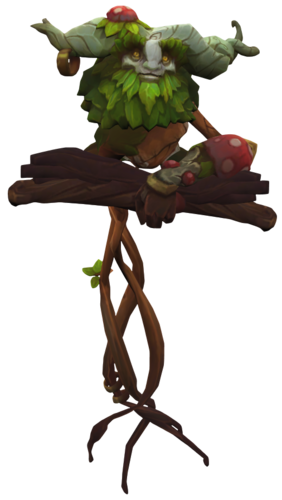

Ivern
Ivern is a different but impactful jungler that pretty much works like a secondary support. He can provide shields buffs for his teammates but requires alot of practice to be played effectivly in the jungle. His unique playstyle makes him frustrating to play against and can have a huge impact throughout the whole game.
